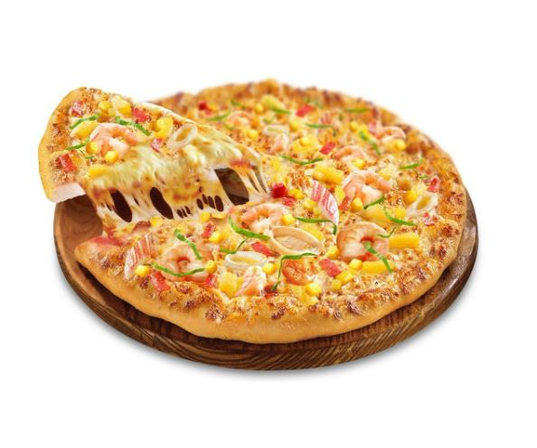

Pizza Sales Revenue
 View ProjectKeywords: Data Exploration, Data Visualization, SQL, PowerBI, Pizza Dataset, Insights, Revenue Analysis, Database Connection, Interactive Visualizations
In a personal project focused on data exploration and visualization, I utilized SQL to extract insights from a pizza dataset. My primary goal was to analyze revenue and uncover associated relationships within the data. By querying the dataset, I identified key metrics and trends, providing a solid foundation for further analysis.
After deriving these insights, I connected the database to PowerBI to create interactive visualizations. This integration allowed me to transform static data into dynamic, user-friendly reports, making it easier to explore and understand the results. The visualizations included various charts and graphs that highlighted revenue trends and relationships, providing a comprehensive view of the data's underlying patterns.
This project demonstrated the power of combining SQL for data analysis with PowerBI for visualization, resulting in an engaging and insightful exploration of the pizza dataset.